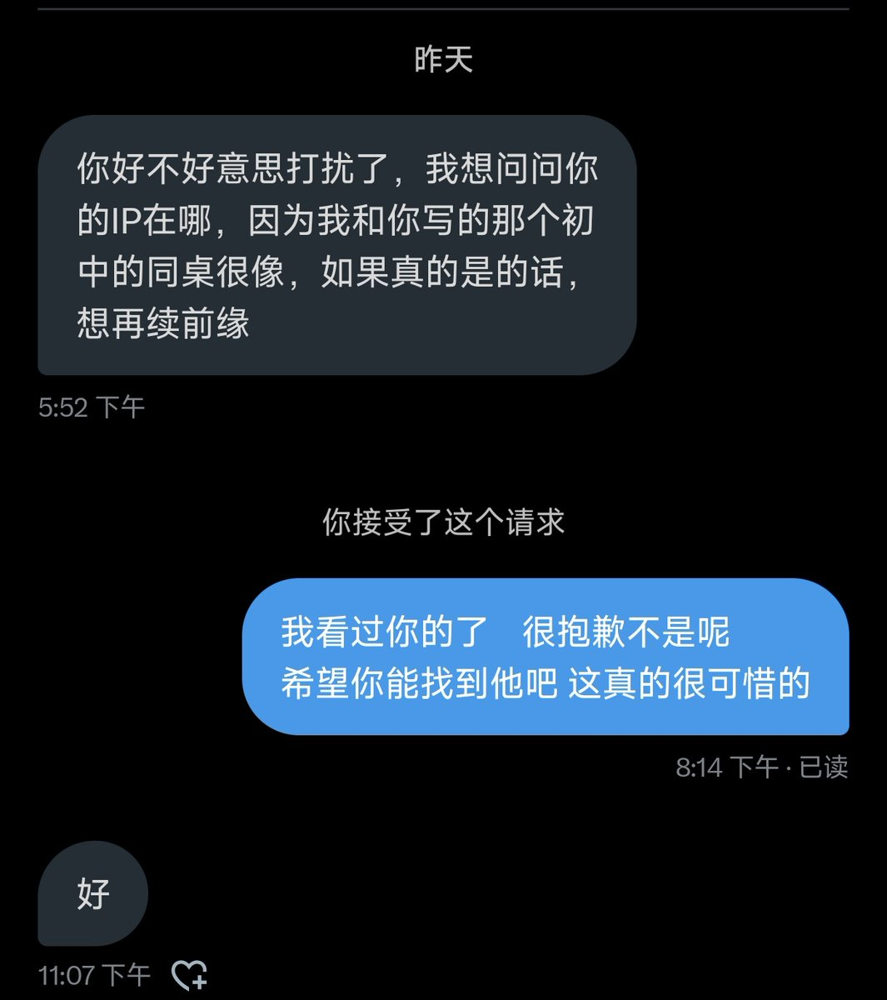

我也感觉 她很可能也玩推特
这很可能就是她
当时看到很激动 我感觉她很有可能是这个样子 虽然确定不是 看了照片
在俄罗斯小说中 主角经常和一个挂牌的女孩恋爱 因为灵魂纯净比肉体美好的多 我不在乎她是不是还是贞洁
教条在乎 可上帝一定不在意
我希望 她就算死也在我面前 因为...
只有这样才能阻止我源源不断的向这里泄出生命力

这很可能就是她
当时看到很激动 我感觉她很有可能是这个样子 虽然确定不是 看了照片
在俄罗斯小说中 主角经常和一个挂牌的女孩恋爱 因为灵魂纯净比肉体美好的多 我不在乎她是不是还是贞洁
教条在乎 可上帝一定不在意
我希望 她就算死也在我面前 因为...
只有这样才能阻止我源源不断的向这里泄出生命力

我初中有一个同桌 当时她很爱贴着我（女孩子）动作很开放，她的凉袖下全都是伤口 颜色是海洋落日和沙滩折射的出的淡粉色 当时我看到“woc，她好厉害” 她也很聪明 （我当时被看做天才）她几乎不需要背单词就可以全部记住（超羡慕）很可惜的是因为她病（胃溃昂）比较严重 所以经常请假
后面相处时间很少 https://t.co/PRtiLuupNB
后面相处时间很少 https://t.co/PRtiLuupNB